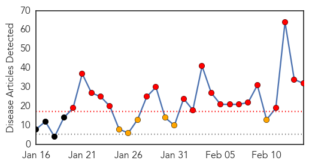
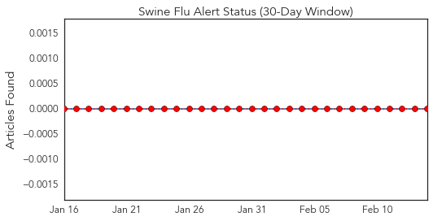
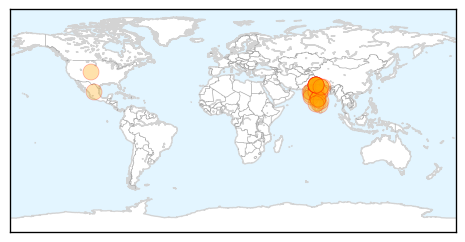

Measles
30-Day Web Trend
24 alerts, 2 warnings

30-Day Twitter Trend
3 alerts, 0 warnings

Article Locations

Article Confidences

Top Articles:
- 0.989
- 3 more confirmed measles cases in Ontario brings total to 11 people
- 0.988
- Eight confirmed cases of measles in Toronto, public health officials say
- 0.986
- Three more confirmed measles cases in Ontario brings total to 11 people
- 0.983
- N.C. DHHS Encourages MMR Vaccination in the Midst of Multi-State Measles Outbreak
- 0.981
- California Has 3 New Measles Cases, Arizona Says Outbreak Winding Down
- 0.977
- Measles outbreak prompts local readiness plans
- 0.970
- California has three new measles cases, Arizona says outbreak winding down
- 0.969
- Look back at deadly history of measles
- 0.963
- 22 cases of measles reported in Canada
- 0.958
- 22 cases of measles reported in Canada
- 0.925
- California measles outbreak was preventable
- 0.903
- Officials confirm fifth measles case in Clark County
- 0.870
- Two measles cases reported in Portage County
- 0.868
- Caribbean on measles watch • Caribbean Life
- 0.865
- Measles vaccination rates vary widely in Mid-Hudson region’s schools
- 0.812
- “I’d rather be safe than sorry:” Health department holds 2nd free vaccine clinic
- 0.809
- California lawmaker introduces bipartisan resolution in favor of measles vaccine
- 0.804
- Measles outbreak stirs up debate
- 0.794
- Marin Coast / Sonoma Coast Guide
- 0.757
- Olympic Christian School students quarantined following second case of measles in Port Angeles -- Port Angeles Port Townsend Sequim Forks Jefferson County Clallam County Olympic Peninsula Daily NEWS
- 0.690
- Public editor criticizes the Toronto Star's Gardasil story
- 0.671
- Measles fear grows in Silicon Valley
- 0.658
- Mississippi a star in vaccine efficacy
- 0.633
- Costa Rica issues warning about bringing back measles from the US
- 0.555
- Measles outbreak in Unity state triggers mass vaccination campaign
- 0.555
- Measles outbreak in Unity state triggers mass vaccination campaign
- 0.554
- Doctors reveal the 5 fears and myths about vaccines
- 0.539
- Bipartisan resolution in favor of measles vaccine introduced
Top Tweets:
-
No tweets found for Feb 14, 2015
Swine Flu
30-Day Web Trend
20 alerts, 6 warnings

30-Day Twitter Trend
0 alerts, 0 warnings

Article Locations
Article Confidences
Top Articles:
- 1.000
- Beware, swine flu is spreading in India; 485 deaths during Jan 1-Feb 12 – THE SEN TIMES
- 1.000
- Swine Flu Tsunami Claims 500 Lives, Affects 6,000
- 1.000
- Health Ministry Crackdown May be Too Little Too Late
- 1.000
- India sees rapid rise in swine flu deaths and cases
- 0.999
- 2015 Swine Flu Toll at 485, More Than Two-Fold Jump Over 2014
- 0.998
- 16 more cases of H1N1 in Mumbai, doctors advise against Tamiflu overuse
- 0.998
- Swine flu toll in Madhya Pradesh touches 62
- 0.997
- Maintain supply of swine flu drug: Govt to companies
- 0.995
- Swine flu claims two more lives in Punjab, toll mounts to 23
- 0.990
- foreign countries are likely to advise their nationals against travelling to India-IndiaTV News
- 0.989
- 20 People Test Positive for Swine Flu in Ghaziabad
- 0.988
- Flu hospitalizations hit record high in Colorado - KOAA.com
- 0.987
- Swine flu claims 12 more lives in Gujarat; toll rises to 136
- 0.977
- India sees big spurt in swine flu cases in 2015
- 0.974
- India sees big spurt in swine flu cases in 2015
- 0.973
- Five more test positive for swine flu, but no signs of tabs arriving
- 0.970
- Swine flu kills 8 more in state
- 0.966
- MP govt gets 11-point HC order to tackle swine flu menace
- 0.965
- New symptoms of swine flu identified are - High Fever, Cough, Sore throat, loose motions, sneezing, leg pain, running nose or/and body pain
- 0.964
- 41 fresh swine flu cases despite rising temperature
- 0.961
- Five new swineflu cases detected in Kolkata
- 0.947
- H1N1: two more deaths in Karnataka
- 0.947
- H1N1: two more deaths in Karnataka
- 0.945
- 6 more die as swine flu toll reaches 49
- 0.909
- 'No Need to Panic over H1N1'
- 0.894
- In a day, 24 more die of swine flu in Gujarat, Rajasthan
- 0.883
- Hostellers flee MANIT, SPA swine flu rumours
- 0.873
- Pvt hospital, labs fleecing patients for H1N1 tests
- 0.862
- Student of Aligarh Muslim University Dies of Suspected Swine Flu
- 0.808
- Chouhan reviews swine flu situation for third consecutive day
- 0.770
- Concerned over flu deaths in MP, Scindia writes letter to CM
- 0.623
- Whose line to toe anyway?
Top Tweets:
-
No tweets found for Feb 14, 2015